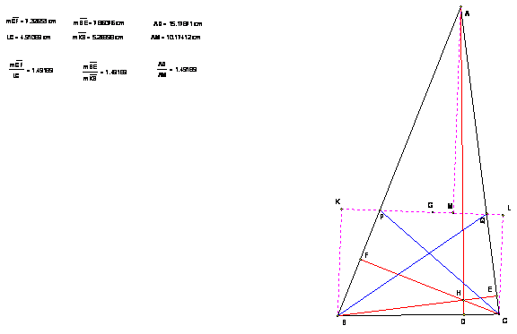

De investigación
Propuesto por Ricard Peiró i Estruch Profesor de Matemáticas del IES 1 de Xest (València)
Problema 317
Siguen , ha hb hc, les tres altures del triangle ABC tals que ha=hb+hc.
La recta que passa pels peus de les bisectrius interiors dels angles B i C passa pel baricentre del triangle.
Oposicions d’Eivissa 2002.
Sean ha hb hc, las tres alturas del triángulo ABC tales que ha =hb+hc.
La recta que pasa por los pies de las bisectrices interiores de los ángulos B y C pasa por el baricentro del triángulo.
Oposiciones Ibiza 2002.
Solución de Mark Tudosi
Es conocido que las
aturas son inversamente proporcionales a sus lados
Cuando se dibuja una
recta desde el pie de la bisectriz, la perpendicular desde
los vértices es inversamente proporcional a los lados
opuestos por la propiedad de la bisectriz de dividir el lado en segmentos
proporcionales a los lados contiguos. Así CL es inversamente proporcional a AB.
Por ello las alturas y
perpendiculares a desde el pie de las bisectrices son directamente proporcionales.
Conocemos que cualquier
recta que pase por el baricentro G verifica que la distancia desde un vértice a la misma es igual a la suma de
distancias desde los vértices situados al otro lado de la recta.
En el caso en que ha = hb + hc la recta de los pies de
las bisectrices debe contener el baricentro G.
We know that altitudes are inversely proportional to their sides. When a line is drawn through the feet of angle bisectors, the perpendiculars onto it from vertices are also inversely proportional to the sides opposite to these vertices because of the angle bisectors property to divide the side into segments proportionate to the sides next to them, e.g. CL is inversely proportional to AB.
Thus, the altitudes and perpendiculars to line through the feet of angle bisectors are directly proportional.
Now we know that for any line passing through centroid G distance from one vertex is equal to the sum of distances from the vertices on the other side of the line.
In the case that ha = hb + hc the angle bisectors feet line must contain
centroid G.
